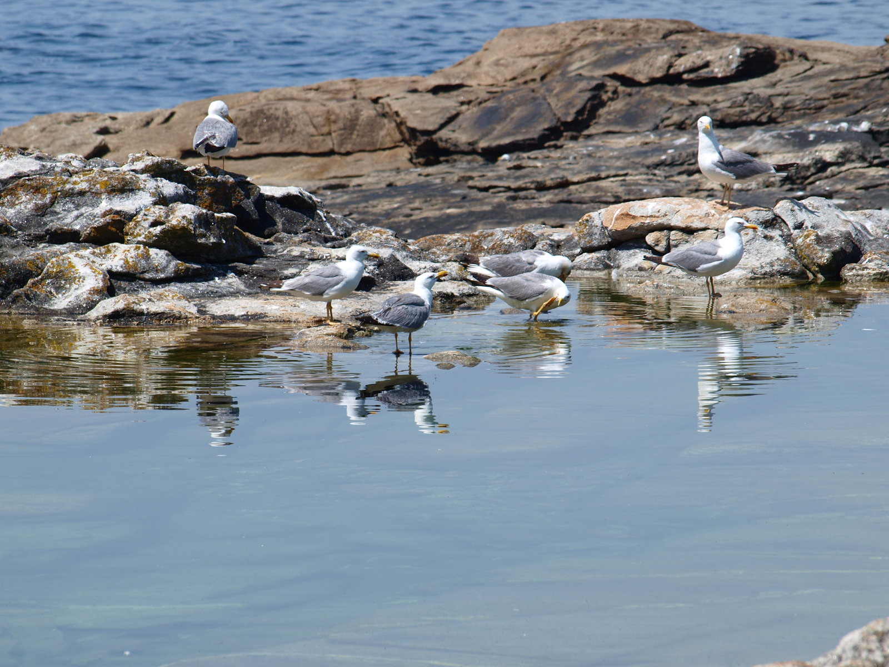

Muíños do Folón e do Picón

El Concello do Rosal es una localidad y municipio de la provincia de Pontevedra, en la comunidad autónoma de Galicia, España. Se encuentra situado en la comarca del Salnés, en la ría de Arousa. El nombre "Rosal" proviene del latín "rosarium", que significa "jardín de rosas". Es una localidad con una población de alrededor de 4.000 habitantes y cuenta con una amplia oferta de servicios y actividades culturales y de ocio. Es famosa por sus playas, sus vistas panorámicas y su deliciosa gastronomía.
Alto de Oia
La ruta de los molinos del Folón y del Pico es una ruta senderista que transcurre por la costa del Concello do Rosal y que te permite disfrutar de una vista impresionante del mar y de las playas de la zona. Los molinos del Folón y del Pico son dos molinos de viento que se encuentran en la cima de un acantilado y que ofrecen una vista panorámica única. La ruta también te llevará por algunas de las playas más hermosas de la zona, como la playa de Punta Candelaria o la playa de Barrañán. Las playas del Concello do Rosal son muy variadas y cuentan con diferentes tipos de arena y aguas. Algunas de las playas más conocidas son:
Portecelo
Playa de Punta Candelaria: es una playa de arena fina y aguas cristalinas. Se encuentra en una zona tranquila y es ideal para relajarse y tomar el sol. Playa de Barrañán: es una playa de arena fina y aguas poco profundas. Es ideal para ir con niños y para practicar deportes acuáticos. Playa de Baldaio: es una playa de arena fina y aguas poco profundas. Se encuentra en una zona tranquila y es ideal para relajarse y tomar el sol.